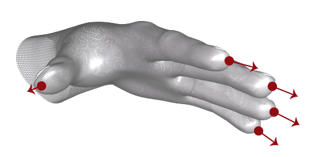

LeapPointable Class Reference
| Inherits from | NSObject |
| Declared in | LeapObjectiveC.h |
Overview
The LeapPointable class reports the physical characteristics of a detected finger or tool.
Both fingers and tools are classified as LeapPointable objects. Use the
[LeapPointable isFinger] function to determine whether a pointable object
represents a finger. Use the [LeapPointable isTool] function to determine
whether a pointable object represents a tool. The Leap classifies a detected
entity as a tool when it is thinner, straighter, and longer than a typical finger.
To provide touch emulation, the Leap Motion software associates a floating touch
plane that adapts to the user’s finger movement and hand posture. The Leap Motion
interprets purposeful movements toward this plane as potential touch points. The
logic used by the LeapPointable class is the same as that used by the Leap Motion
software for OS-level touch and mouse input emulation. The LeapPointable class reports
touch state with the touchZone and touchDistance properties.
Note that LeapPointable objects can be invalid, which means that they do not contain
valid tracking data and do not correspond to a physical entity. Invalid LeapPointable
objects can be the result of asking for a pointable object using an ID from an
earlier frame when no pointable objects with that ID exist in the current frame.
A pointable object created from the LeapPointable constructor is also invalid.
Test for validity with the [LeapPointable isValid] function.
Tasks
-
– idA unique ID assigned to this LeapPointable object, whose value remains the
same across consecutive frames while the tracked finger or tool remains
visible. If tracking is lost (for example, when a finger is occluded by
another finger or when it is withdrawn from the Leap field of view), the
Leap may assign a new ID when it detects the entity in a future frame. -
– tipPositionThe tip position in millimeters from the Leap origin.
-
– tipVelocityThe rate of change of the tip position in millimeters/second.
-
– directionThe direction in which this finger or tool is pointing.
-
– widthThe estimated width of the finger or tool in millimeters.
-
– lengthThe estimated length of the finger or tool in millimeters.
-
– isFingerWhether or not the LeapPointable is believed to be a finger.
Fingers are generally shorter, thicker, and less straight than tools. -
– isToolWhether or not the LeapPointable is believed to be a tool.
Tools are generally longer, thinner, and straighter than fingers. -
– isValidReports whether this is a valid LeapPointable object.
-
– touchZoneThe current touch zone of this LeapPointable object.
-
– touchDistanceA value proportional to the distance between this LeapPointable object and the
adaptive touch plane. -
– stabilizedTipPositionThe stabilized tip position of this LeapPointable.
-
– timeVisibleThe duration of time this Pointable has been visible to the Leap Motion Controller.
-
– frameThe LeapFrame associated with this LeapPointable object.
-
– handThe LeapHand associated with this finger or tool.
-
+ invalidReturns an invalid LeapPointable object.
Class Methods
invalid
Returns an invalid LeapPointable object.
+ (LeapPointable *)invalidReturn Value
The invalid LeapPointable instance.
Availability
Since 1.0
Discussion
Returns an invalid LeapPointable object.
You can use the instance returned by this function in comparisons testing
whether a given LeapPointable instance is valid or invalid. (You can also use the
LeapPointable isValid function.)
Declared In
LeapObjectiveC.hInstance Methods
direction
The direction in which this finger or tool is pointing.
- (LeapVector *)directionReturn Value
The LeapVector pointing in the same direction as the tip of this
LeapPointable object.
Availability
Since 1.0
Discussion
The direction in which this finger or tool is pointing.
The direction is expressed as a unit vector pointing in the same
direction as the tip.

Declared In
LeapObjectiveC.hframe
The LeapFrame associated with this LeapPointable object.
- (LeapFrame *)frameReturn Value
The associated LeapFrame object, if available; otherwise,
an invalid LeapFrame object is returned.
Availability
Since 1.0
Discussion
The LeapFrame associated with this LeapPointable object.
Declared In
LeapObjectiveC.hhand
The LeapHand associated with this finger or tool.
- (LeapHand *)handReturn Value
The associated LeapHand object, if available; otherwise,
an invalid LeapHand object is returned.
Availability
Since 1.0
Discussion
The LeapHand associated with this finger or tool.
Declared In
LeapObjectiveC.hid
A unique ID assigned to this LeapPointable object, whose value remains the
same across consecutive frames while the tracked finger or tool remains
visible. If tracking is lost (for example, when a finger is occluded by
another finger or when it is withdrawn from the Leap field of view), the
Leap may assign a new ID when it detects the entity in a future frame.
- (int32_t)idReturn Value
The ID assigned to this LeapPointable object.
Availability
Since 1.0
Discussion
A unique ID assigned to this LeapPointable object, whose value remains the
same across consecutive frames while the tracked finger or tool remains
visible. If tracking is lost (for example, when a finger is occluded by
another finger or when it is withdrawn from the Leap field of view), the
Leap may assign a new ID when it detects the entity in a future frame.
Use the ID value with the [LeapFrame pointable:] function to find this
LeapPointable object in future frames.
Declared In
LeapObjectiveC.hisFinger
Whether or not the LeapPointable is believed to be a finger.
Fingers are generally shorter, thicker, and less straight than tools.
- (BOOL)isFingerReturn Value
YES, if this LeapPointable is classified as a LeapFinger.
Availability
Since 1.0
Discussion
Whether or not the LeapPointable is believed to be a finger.
Fingers are generally shorter, thicker, and less straight than tools.
Declared In
LeapObjectiveC.hisTool
Whether or not the LeapPointable is believed to be a tool.
Tools are generally longer, thinner, and straighter than fingers.
- (BOOL)isToolReturn Value
YES, if this LeapPointable is classified as a LeapTool.
Availability
Since 1.0
Discussion
Whether or not the LeapPointable is believed to be a tool.
Tools are generally longer, thinner, and straighter than fingers.
Declared In
LeapObjectiveC.hisValid
Reports whether this is a valid LeapPointable object.
- (BOOL)isValidReturn Value
YES, if this LeapPointable object contains valid tracking data.
Availability
Since 1.0
Discussion
Reports whether this is a valid LeapPointable object.
Declared In
LeapObjectiveC.hlength
The estimated length of the finger or tool in millimeters.
- (float)lengthReturn Value
The estimated length of this LeapPointable object.
Availability
Since 1.0
Discussion
The estimated length of the finger or tool in millimeters.
The reported length is the visible length of the finger or tool from the
hand to tip. If the length isn’t known, then a value of 0 is returned.
Declared In
LeapObjectiveC.hstabilizedTipPosition
The stabilized tip position of this LeapPointable.
- (LeapVector *)stabilizedTipPositionAvailability
Since 1.0
Discussion
The stabilized tip position of this LeapPointable.
Smoothing and stabilization is performed in order to make
this value more suitable for interaction with 2D content.
Declared In
LeapObjectiveC.htimeVisible
The duration of time this Pointable has been visible to the Leap Motion Controller.
- (float)timeVisibleReturn Value
The duration (in seconds) that this Pointable has been tracked.
Availability
Since 1.0
Discussion
The duration of time this Pointable has been visible to the Leap Motion Controller.
Declared In
LeapObjectiveC.htipPosition
The tip position in millimeters from the Leap origin.
- (LeapVector *)tipPositionReturn Value
The LeapVector containing the coordinates of the tip position.
Availability
Since 1.0
Discussion
The tip position in millimeters from the Leap origin.
Declared In
LeapObjectiveC.htipVelocity
The rate of change of the tip position in millimeters/second.
- (LeapVector *)tipVelocityReturn Value
The LeapVector containing the coordinates of the tip velocity.
Availability
Since 1.0
Discussion
The rate of change of the tip position in millimeters/second.
Declared In
LeapObjectiveC.htouchDistance
A value proportional to the distance between this LeapPointable object and the
adaptive touch plane.
- (float)touchDistanceAvailability
Since 1.0
Discussion
A value proportional to the distance between this LeapPointable object and the
adaptive touch plane.
The touch distance is a value in the range [-1, 1]. The value 1.0 indicates the
LeapPointable is at the far edge of the hovering zone. The value 0 indicates the
LeapPointable is just entering the touching zone. A value of -1.0 indicates the
LeapPointable is firmly within the touching zone. Values in between are
proportional to the distance from the plane. Thus, the touchDistance of 0.5
indicates that the LeapPointable is halfway into the hovering zone.
You can use the touchDistance value to modulate visual feedback given to the
user as their fingers close in on a touch target, such as a button.
Declared In
LeapObjectiveC.htouchZone
The current touch zone of this LeapPointable object.
- (LeapPointableZone)touchZoneAvailability
Since 1.0
Discussion
The current touch zone of this LeapPointable object.
The Leap Motion software computes the touch zone based on a floating touch
plane that adapts to the user’s finger movement and hand posture. The Leap
Motion interprets purposeful movements toward this plane as potential touch
points. When a LeapPointable moves close to the adaptive touch plane, it enters the
“hovering” zone. When a LeapPointable reaches or passes through the plane, it enters
the “touching” zone.
The possible states are present in the Zone enum:
- LEAP_POINTABLE_ZONE_NONE – The LeapPointable is outside the hovering zone.
- LEAP_POINTABLE_ZONE_HOVERING – The LeapPointable is close to, but not touching the touch plane.
- LEAP_POINTABLE_ZONE_TOUCHING – The LeapPointable has penetrated the touch plane.

The touchDistance property provides a normalized indication of the distance to
the touch plane when the LeapPointable is in the hovering or touching zones.
Declared In
LeapObjectiveC.hwidth
The estimated width of the finger or tool in millimeters.
- (float)widthReturn Value
The estimated width of this LeapPointable object.
Availability
Since 1.0
Discussion
The estimated width of the finger or tool in millimeters.
The reported width is the average width of the visible portion of the
finger or tool from the hand to the tip. If the width isn’t known,
then a value of 0 is returned.
Declared In
LeapObjectiveC.h